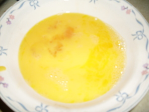
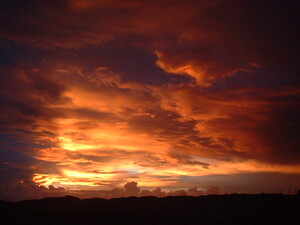

kalawag  
/kalawag/
n.
Curcuma_longa
turmeric
Ka seini iyan sika se eggamiten ne igtina wey igbatek te sedsed wey ke lumbrun ne gehimuwen ne ikam wey egkaayun degma seini ne igbatek te egkakeen.
Due kalawag ne eggamiten ta ne igbatek te egkakeen?
Is there a turmeric that we are using for food coloring?
Cult. The rhizomes are used as a yellow dye for mats and as a flavoring in foods
Eng. turmeric; coloring
Tag. dilaw; luyang dilaw; kilaw
Ceb. lumpayang; kinambul; kalabaga; dulau
OCM: Flora (137)
Online dict status: -
Usage level: R
1.
adj.
(makalawag, mA1-) yellow
ka seini ne lalag iyan sika se kalasiyan te batek ne malù malayag.
Makalawag ka kumbalè ne igkeupii ku su meupiya ne egpitawen.
I like the t-shirt yellow in color for it is a bright in sight.
Eng. yellow; orange; yellowish; color variety
Tag. diláw
Ceb. dalag
Ilo.: duyáw
OCM: Visual Arts (5311)
Online dict status: -
Usage level: B
2.
adj.
(makalawag, mA1-) pale-skinned
Neyid-u a te anggam ku su makalawag e sikandin ka migmalarya.
I feel sorry to my pale-skinned uncle for he was suffering malaria.
Eng. pale-skinned
Data Qual: is this only for sickness?
Data Qual: no also when you are afraid or feel ashamed
OCM: Theory of Disease (753)
DDP: Skin (2.1.4)
Online dict status: -
Usage level: M
vi.
for someone or something (egmakalawag, migmakalawag/immakalawag, makalawag, agent & theme, eg><ø-mA1-) to go pale
Eng. go pale; pale, go
OCM: Theory of Disease (753)
DDP: Skin (2.1.4)
Online dict status: -
Usage level: M
v.
for the sky (egpamalawag, migpamalawag/impamalawag, pakalawag, agent, eg><ø-pA-) to be all orange with drizzle (at sunset)
Data Qual: with cloud?
Egpamalawag e ka aldew su palinneu te mareet ka timpu.
The sky was going all orange as a sign of bad weather.
Data Qual: should it be the light? the sun?
Morpho. paN-+?
Eng. all orange
OCM: Ethnometeorology (821), Ethnogeography (823)
DDP: Sun (1.1.1), Time of the day (8.4.1.2.3)
Online dict status: c
Usage level: B
Updated by: RJH,TME,QDL,NJK,NJK,QDL,NJK,RAA,RJH,NJK
Last updated: 30/Jul/2011
"makalawag" in healthbook "Migpamawian ni Inuk ka sumbaley rin ne migpangaliskis"
"makalawag" in healthbook "Migpamawian ni Inuk ka sumbaley rin ne migpangaliskis"
"makalawag" in healthbook "Keilangan ka meupiya neg kakeen"
This page last updated: 19/May/2012
Copyright © 2009-2010, Matigsalug Language Christian Association, Inc